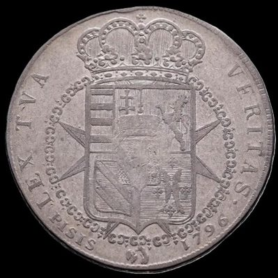
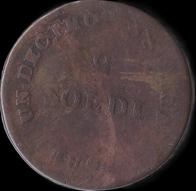
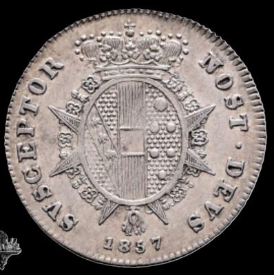

Home
Italia
Stati Preunitari
Granducato di Toscana
Granducato di Toscana
Clicca sulle monete per vedere il retro
1 Francescone

1796
2 Soldi

1804
½ Paolo

1857
Home
Italia
Stati Preunitari
Granducato di Toscana